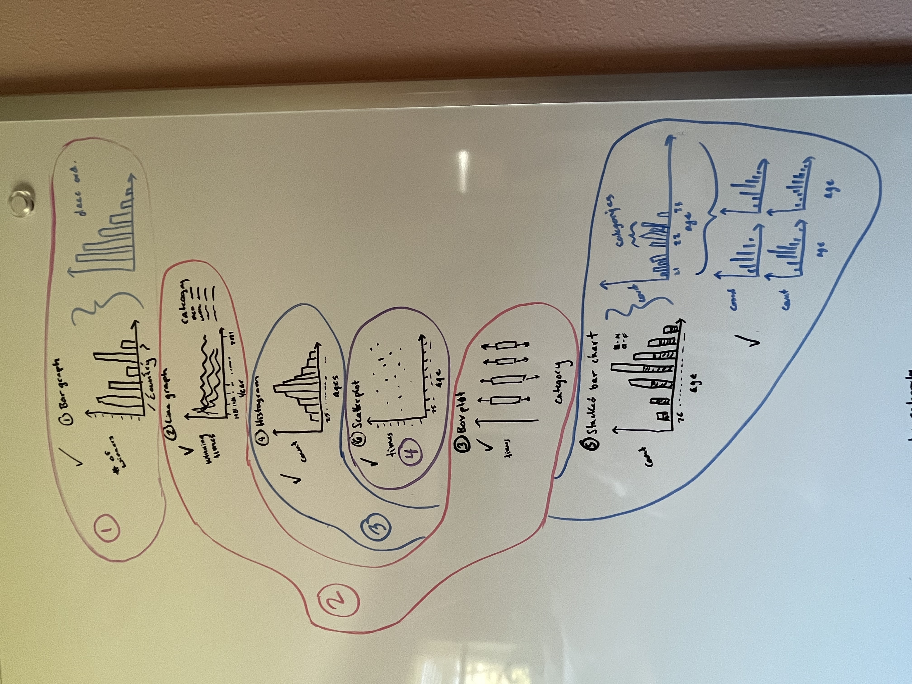

Show Code to Load Data
remotes::install_github("nrennie/LondonMarathon")
utils::data(
winners,
package = "LondonMarathon")
utils::data(
london_marathon,
package = "LondonMarathon")
birthdays <- readr::read_csv("data/birthdays.csv")In this blog post we take a closer look at how Running Analysis was made, including set up, data cleaning, creating data visuals, and challenges encountered along the way. By understanding the process behind the project, we can gain a better appreciation for the value of data analysis and the skills required to make it happen.
Concept sketches are beneficial for data analysis as they allow for quick and iterative exploration of data visualization ideas, facilitating communication between team members and stakeholders, and reducing the risk of errors and rework later on in the project.
This analysis used three concept drawings: visuals, structure, and layout. To access each drawing simply click on the corresponding tab.

For this analysis I started by creating some data visualizations for four reasons:
#TidyTuesday is about “understanding how to summarize and arrange data to make meaningful charts”.
Stakeholders and upper management will often request for data analysis to be visualized. This will help them be able to glance through the findings, and dive deeper where they feel to.
Before reading about this data I have never heard of the London Marathon. After I read through some articles on the event, I found drafting up data visuals helped me brainstorm through the project.
Since the conception around this analysis started with data visuals, it made the most sense to create a data structure and flow that centered the data visuals.
Img.
Explanation.
The setup for this analysis can be broken down into 2 parts: Data Sources, and Packages. To access more information on each part, simply click on the corresponding tab.
This analysis uses two data sources:
London Marathon package from TidyTuesday April-24-2023.
The first query on Tab 7, “Queries”, was utilized to extract the names of all the athletes. Then Google and Wikipedia were used to gather information on each athletes’ birthday. It should be noted that not all of their birthdays were accessible online.
remotes::install_github("nrennie/LondonMarathon")
utils::data(
winners,
package = "LondonMarathon")
utils::data(
london_marathon,
package = "LondonMarathon")
birthdays <- readr::read_csv("data/birthdays.csv")The data is has 4 main parts: Raw Data, Clean Data, Queries, and Data Save. To access each part, simply click on the corresponding tab.
This analysis uses three raw data sets:
winners : category, year, athlete, nationality, time
london_marathon : date, year, applications, accepted, starters, finishers, raised, official charity
birthdays : n, Name, Birthday
This analysis creates 8 clean data sets:
birthdays : Used for data visuals 4-6, and includes n, Name, and Birthday. This data set simply updates the existing data set so that the “Birthday” column reads as a date value. This will be important for doing math with dates later on.
df1 : Used for vis1, and includes column values Nationality, and nat_winners. This data set groups the winners data set by Nationality, counts the number of runners from each nationality, and then arranges the data by the highest number of winners.
df4_join1 : used for df4_join2, and includes Category, Year, Athlete, Nationality, Time, and Birthday. This data set joins the winners and birthdays data set by “Athlete” and “Name”.
df4_join2 : used for df4_age, and includes Year, Athlete, Birthday, Time, Category, Date. This data set joins df4_join1 with the london_marathon data by Year.
df4_age : used for df4, and includes Year, Athlete, Birthday, Time, Category, Date. This data set subtracts the date of the marathon from the winners birthday, and then divides that value by 365.25 so that the age is in years instead of days.
df4 : used for vis4 and includes age, and count. This data set filters ‘NA’ age values, groups by age, and then counts the number in each age group.
df5 : used for vis5 and includes category, age, and count. This data set filters ‘NA’ ages, groups the data by Category, and then age, and then summaries the count.
df6 : used for vis6 and includes Time, age, and athlete. This data set filters ‘NA’ ages, and summaries the Time, age, Athlete, and Category.
# 1. birthdays
birthdays$Birthday <- as.Date(birthdays$Birthday)
# 2. df1
df1 <- winners %>%
group_by(Nationality) %>%
summarise(nat_winners = n()) %>%
arrange(desc(nat_winners))
# 3. df4_join1
df4_join1 <- winners %>%
select(
Category,
Year,
Athlete,
Nationality,
Time) %>%
full_join(
birthdays %>% select(
Name, Birthday
), by = c("Athlete" = "Name"))
# 4. df4_join2
df4_join2 <- df4_join1 %>%
dplyr::select(
Year,
Athlete,
Birthday,
Time,
Category) %>%
dplyr::full_join(
london_marathon %>%
select(
Date,
Year),
by = c("Year"="Year"))
# 5. df4_age
df4_age <- df4_join2
df4_age$age <- as.numeric(df4_age[[6]] - df4_age[[3]])%/%365.25
# 6. df4
df4 <- df4_age %>%
filter(!is.na(age)) %>%
group_by(age) %>%
summarise(count = n())
# 7. df5
df5 <- df4_age %>%
filter(!is.na(age)) %>%
group_by(Category, age) %>%
summarise(count = n())
# 8. df6
df6 <- df4_age %>%
filter(!is.na(age)) %>%
summarise(Time = Time,
age = age,
Athlete = Athlete,
Category = Category)This analysis uses ? queries.
q1 : creates a list of all athletes to win the London Marathon.
q2 : creates a data frame of all athletes whose birthday is unknown.
q3 : calculates the total amount of money raised.
# 1. q1
q1 <- winners$Athlete[!duplicated(winners$Athlete)]
q1 <- sort(q1)
# 2. q2
q2 <- birthdays %>%
filter(is.na(Birthday))
# 3. q3
q3 <- london_marathon %>%
filter(!is.na(Raised)) %>%
summarise(total = sum(Raised))
#
test3 <- winners %>%
group_by(Athlete) %>%
summarise(wins = n(),
avg_time = mean(Time)) %>%
arrange(desc(wins))This analysis has 3 data lists:
list_raw_data : includes all raw data sets.
list_clean_data : includes all clean data sets.
list_queries : includes all queries.
# 1. list_raw_data
list_raw_data <- list(
winners,
london_marathon,
birthdays
)
# save
save(list_raw_data,
file = "data/list_raw_data.RData")
# 2. list_clean_data
list_clean_data <- list(
birthdays,
df1,
df4_join1,
df4_join2,
df4_age,
df4,
df5,
df6
)
# save
save(list_clean_data,
file = "data/list_clean_data.RData")
# 3. list_queriesTo save we just use the save functions:
save(list_raw_data,
file = "data/list_raw_data.RData")Creating data visuals has 3 main parts: Data Visuals, Style Functions, and Image Save. To access each part, simply click on the corresponding tab.
vis1 : A horizontal bargraph that shows the number of winners per country.
vis2 : A line graph that shows the winning times over the years by category.
vis3 : A boxplot that shows the winning times grouped by category.
vis4 : A histogram that shows the number of winners by age.
vis5 : A stacked bar chart that shows the number of winners by age in each category.
vis6 : A scatterplot of the winning times by age.
# 1. vis1
vis1 <- ggplot2::ggplot(
df1,
ggplot2::aes(
x = nat_winners,
# reorder to order Nationality by nat_winners
y = reorder(
Nationality,
nat_winners)
)) +
ggplot2::geom_bar(
stat="identity"
)
# 2. vis2
vis2 <- ggplot2::ggplot(
winners,
ggplot2::aes(
x = Year,
y = Time,
group = Category)
) +
ggplot2::geom_line(
ggplot2::aes(
color = Category)
)
# 3. vis3
vis3 <- ggplot2::ggplot(
winners,
ggplot2::aes(
x = Category,
y = Time)
) +
ggplot2::geom_boxplot()
# 4. vis4
vis4 <- ggplot2::ggplot(df4) +
ggplot2::geom_bar(
ggplot2::aes(
x = age,
y = count),
stat = "identity")
# 5. vis5
vis5 <- ggplot2::ggplot(
df5,
ggplot2::aes(
x = age,
y = count
)) +
ggplot2::geom_bar(
position = "dodge",
stat = "identity"
) +
ggplot2::facet_wrap(~Category)
# 6. vis6
vis6 <- ggplot2::ggplot(
df6,
ggplot2::aes(
x=age,
y=Time)) +
ggplot2::geom_point() +
ggplot2::facet_wrap(~Category) sty1 : is a function that styles vis1 by adding a title, an x label, and removing the y label.
sty2 : is a function that styles vis2 by …
sty3 : is a function that styles vis3 by …
sty4 : is a function that styles vis4 by …
sty5 : is a function that styles vis5 by …
sty6 : is a function that styles vis6 by …
# 1. sty1
sty1 <- function(data){
sty1 <- data +
# title
ggplot2::ggtitle(
"Nationality of London Marathon Winners") +
# labels
ggplot2::ylab(" ") +
ggplot2::xlab("Number of Winners") +
# footnote
ggplot2::labs(
caption = "Graph by Randi Bolt \n Data from #TidyTuesday"
) +
# value next to bar
ggplot2::geom_text(
aes(label = nat_winners,
hjust = -0.2)
)
return(sty1)
}
# 2. sty2
sty2 <- function(data){
sty2 <- data +
ggplot2::ggtitle(
"Winning London Marathon Times by Category") +
ggplot2::labs(
caption = "Graph by Randi Bolt \n Data from #TidyTuesday"
)
return(sty2)
}
# 3. sty3
# 4. sty4
sty4 <- function(data){
sty4 <- data +
ggplot2::ggtitle(
"Ages of Winners") +
ggplot2::labs(
caption = "Graph by Randi Bolt \n Data from #TidyTuesday"
) +
ggplot2::ylab("Count") +
ggplot2::xlab("Ages")
return(sty4)
}
# 5. sty5
sty5 <- function(data){
sty5 <- data +
ggplot2::ggtitle(
"Ages of Winners by Category") +
ggplot2::labs(
caption = "Graph by Randi Bolt \n Data from #TidyTuesday"
) +
ggplot2::ylab("Count") +
ggplot2::xlab("Ages")
return(sty5)
}
# 6. sty6
sty6 <- function(data){
sty6 <- data +
ggplot2::ggtitle(
"Winning Times by Age and Category") +
ggplot2::labs(
caption = "Graph by Randi Bolt \n Data from #TidyTuesday"
) +
ggplot2::ylab("Time") +
ggplot2::xlab("Ages")
return(sty6)
}vis_save : saves all data visuals into a list.
vis_save_function : function that takes in a data visual, and file name, and saves that data visual by the file name given.
vis_save_files : uses vis_save_function to save all data visuals as images using a list.
# 1. vis_save
vis_save <- list(
sty1(vis1),
sty2(vis2),
sty2(vis3),
sty4(vis4),
sty5(vis5),
sty6(vis6)
)
# 2. vis_save_function
save_function <- function(data_vis, img_name){
dat_vis <- data_vis
png(img_name)
print(dat_vis)
dev.off(dat_vis)
return(dat_vis)
}
# 3. vis_save_files
vis_save_files <- list(
save_function(sty1(vis1), "img/vis1.png"),
save_function(sty2(vis2), "img/vis2.png"),
save_function(sty2(vis3), "img/vis3.png"),
save_function(sty4(vis4), "img/vis4.png"),
save_function(sty5(vis5), "img/vis5.png"),
save_function(sty6(vis6), "img/vis6.png")
)Blah blah blah
# world data
world_data <- ggplot2::map_data("world")
#head(world_data)
# join winners with world_data
join_data <- winners %>%
left_join(world_data, by = c("Nationality" = "region"))Warning in left_join(., world_data, by = c(Nationality = "region")): Each row in `x` is expected to match at most 1 row in `y`.
ℹ Row 2 of `x` matches multiple rows.
ℹ If multiple matches are expected, set `multiple = "all"` to silence this
warning.# head(join_data)
# bad map lol
test <-
ggplot(join_data,
aes(
long, lat, color = Nationality, size = Nationality
)) +
borders("world") +
geom_point() +
coord_quickmap() +
guides(color = 'legend')
testWarning: Using size for a discrete variable is not advised.Warning: Removed 56 rows containing missing values (`geom_point()`).
Bonus Material: